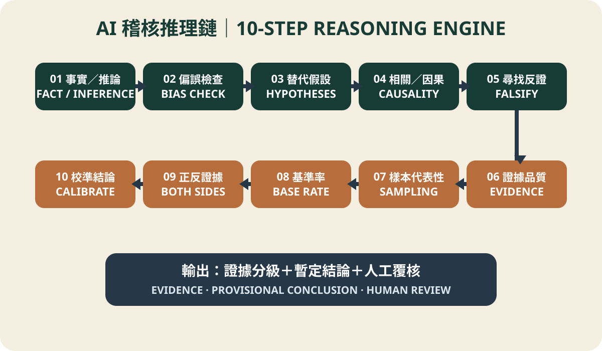

Day 12 built a working paper that could breathe. Today we install something deeper in the AI agent: a reasoning chain that forces it to slow down, argue against itself, and match its language to its evidence.
The case of three weekend payments
An audit team used an approved on-premises model on de-identified payment data. The agent found three weekend payments by one operator and immediately drafted a polished fraud-risk memo. Holmes separated verified facts, management claims, AI inferences, and unknowns. He then proposed competing explanations: emergency shutdown, timezone effects, batch date, compromised access—and fraud.
Lock the evidence room first
Internal data belongs only in an organization-approved enterprise agent, controlled private cloud, or on-premises model, under classification, least-privilege, access, and retention rules. In public tools, use synthetic data, field names, or de-identified summaries—never company names, personal data, credentials, contracts, transaction details, or non-public information.
Minerva-inspired, not an official list
Minerva University's Habits of Mind and Foundational Concepts are transferable tools across critical thinking, creative thinking, effective communication, and effective interaction. Official material notes that the HC set evolves. Our “80 framework” is therefore an audit-oriented product architecture inspired by that approach—not an official translation or list. Version 1 activates ten modules and reserves room for 70 validated additions.
The ten-step AI audit reasoning chain

- Separate fact and inference.
- Check cognitive bias.
- Generate competing hypotheses.
- Distinguish correlation from causation.
- Seek disconfirming evidence.
- Evaluate evidence quality.
- Test sample representativeness.
- Calculate or identify the base rate.
- Search for evidence on both sides.
- Calibrate conclusion strength.
From article to product specification
The complete framework is available as a ChatGPT and AI Agent Markdown instruction file. Every HC becomes five fields: HC name, audit question, prompt, Python/Agent function, and output format. At 80 validated modules, the collection becomes a buildable and testable product specification.
“Highly likely fraud” became “a control exception requiring evidence”
All three payments matched emergency overseas shutdowns and independent approvals. Yet one account showed an unusual login location after delegated access had expired. The fraud allegation failed; a genuine access-control weakness emerged. Good reasoning is not always proving yourself right. It is discovering where you nearly went wrong.
First confirm that the input contains no confidential, personal, or non-public data.
Then run: fact vs inference → bias → competing hypotheses → causality →
disconfirmation → evidence quality → sampling → base rate → both sides → calibration.
Return unknowns, limitations, next audit procedures, and human-review points.
When evidence is insufficient, do not claim the matter is proven.